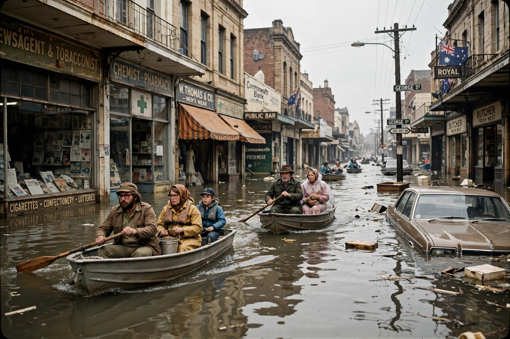

| 1974 Brisbane flood | |
|---|---|
 | |
| Date | January 1974 (peak 29 January) |
| Location | Brisbane and Ipswich, Queensland, Australia |
| Cause | Cyclone Wanda; sustained wet season rain |
| Peak height | 6.78 m at the Brisbane City gauge |
| Deaths | 16 |
| Damage | ~A$980 million (2018 value) |
The 1974 Brisbane flood occurred in January 1974 after a period of heavy rain in south-east Queensland culminated in the passage of tropical cyclone Wanda, which crossed the coast near Maryborough on 25 January and dumped exceptional rainfall on the Brisbane River catchment. The Brisbane River broke its banks, inundating some 13,000 buildings in Brisbane and causing major flooding in Ipswich.
The river peaked at 6.78 metres at the City gauge in the early hours of 29 January — the largest Brisbane flood of the 20th century, though below the great floods of 1893. About 16,000 homes in 35 suburbs were affected, and large ships and pontoons broke loose in the raging current; a gravel barge was famously sunk against the Centenary Bridge to prevent it striking the pillars. Sixteen people died, and more than 300 were injured.
The disaster prompted the construction of the Wivenhoe Dam, completed in 1984, designed for both water supply and flood mitigation for Brisbane. The 1974 flood remained the benchmark for the city until it was surpassed in human impact by the 2010–11 Queensland floods, when a re-inundated Brisbane — protected in part by Wivenhoe — suffered billions of dollars of damage despite a lower river peak.